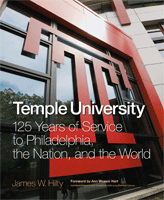

A celebration of Temple University’s 125th Anniversary
A celebration of Temple University’s 125th Anniversary


 A celebration of Temple University’s 125th Anniversary
A celebration of Temple University’s 125th Anniversary

|  |
Temple University125 Years of Service to Philadelphia, the Nation, and the WorldJames W. Hilty with Matthew M. Hanson, foreword by Ann Weaver HartElectronic Book EAN: 978-1-43990-021-5 |
Temple University's alumni number over a quarter million, and include entertainment legend Bill Cosby and Shirley Tilghman, the first woman president of Princeton University. One of every eight college graduates in the Philadelphia area received their degrees at Temple. Temple Owls are everywhere!
Temple University: 125 Years of Service to Philadelphia, the Nation, and the World, by noted historian and Temple professor James Hilty, offers the first full history of Temple University. Lovingly written and beautifully designed, it presents a rich chronicle from founder Russell Conwell’s vision to democratize, diversify, and broaden the reach of higher education to Temple's present day status as the twenty-eighth largest university and the fifth largest provider of professional education in the United States. With its state-of-the-art technological capabilities, improved amenities, and new multimillion dollar facilities, Temple remains at the forefront of America’s modern urban universities.
The book captures Temple’s long record of service to its North Philadelphia neighbors, its global reach to Rome, Tokyo, and beyond, and its development from a rowhouse campus into a lively 11,000- resident urban village at its main campus—all the while assuring "Access to Excellence." Along the way, we learn how Temple reacted to and helped shape major developments in the history of American higher education.
Featuring 250 full-color photos, Temple University provides a wonderful keepsake for those who already know the university and will become a valued resource for anyone interested in the urban university.
"[E]ntertaining and enlightening.... Author Hilty was the right choice to tackle this ambitious endeavor.... Aside from Hilty's colorful portrait of [Temple University founder Russell] Conwell and the Philadelphia of his time -- he was actually a New Englander -- one of the book's great joys (in addition to its many splendid illustrations) are the little facts and tidbits that pepper the text."
—The Jewish Exponent
Also available in e-book
 | James W. Hilty, Professor of History and Dean of Temple's Ambler campus, has written extensively about American politics, including Robert Kennedy: Brother Protector (Temple). He has provided political commentaries for various publications, including the Philadelphia Inquirer and served as historical consultant to various news media, including C-SPAN, NBC News, NPR, and others. A Temple faculty member since 1970, Hilty also wrote the introduction to Marvin Wachman's The Education of a University President (Temple). |
Matthew M. Hanson, a visiting instructor at Saint Joseph's University, has taught United States history for over three decades and held administrative positions at Penn State and Villanova universities. For the last twenty years he has instructed Temple students in United States, European, and Third World history at three different campuses, coming to know Temple quite well. Matthew and his family reside in North Wales, Pennsylvania
History
Philadelphia Region
Education
© 2015 Temple University. All Rights Reserved. This page: http://www.temple.edu/tempress/titles/2033_reg.html.